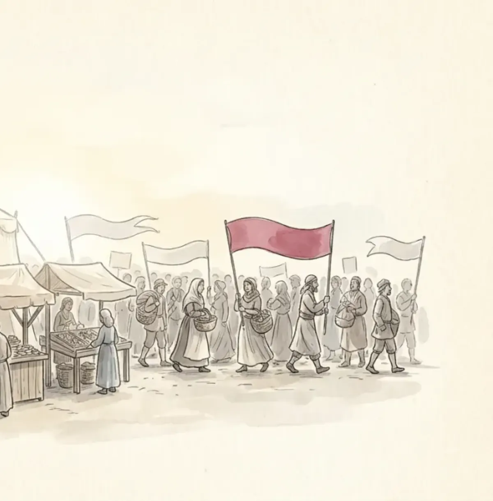

Political communication is the creation, shaping, dissemination, and processing of information among three kinds of actors: political actors (governments, parties), media actors (journalists, platforms), and citizens. What they all compete for has a name worth memorizing: discursive power, the ability to introduce, amplify, and maintain the topics and frames that dominate political discourse. Whoever decides what the town argues about this week holds it.
Today's ecosystem is a hybrid media system: traditional top-down mass communication welded to the decentralized, participative logic of the internet. Politicians run three channels at once: their own (sites, ads, mailing lists), the news media controlled by journalists, and social media geared to user interaction. Between politicians and media the course names a dynamic with a portmanteau: "coopetition", cooperation plus competition for the same discursive power. They need each other and fight each other, daily.
The literature periodizes political communication into four ages. Click through; for each, note the prime channel, the campaign logic, and the audience, which is exactly the row-structure an MCQ will quiz:
Partisan-centred. Prime channel: the party press and face-to-face meetings. Campaign logic: party logic, organize the faithful. Audience: partisans and members. The town crier literally wears the party's colors; you read your side's paper and never the other's.
Mass-centred. Prime channel: limited-channel television, the whole town watching one screen. Campaign logic: media logic, advertise to everyone at once. Audience: passive masses. Reporting turns strategic and interpretive. The single most shared communication experience societies ever had, and it is over.
Target-group-centred. Prime channel: multi-channel TV plus the early internet. Campaign logic: marketing logic, customize the message per segment. Audience: targeted groups. Reporting turns critical and reflexive. The one screen shatters into demographics.
Individual-centred. Prime channel: social media plus multi-channel TV. Campaign logic: datafication logic, micro-target individuals from their data. Audience: micro-targeted individuals; journalism turns networked and hybrid. The slides' cases: Trump bypassing legacy media outright, Meloni's TikTok reaching young voters in an informal register, Macron's En Marche running a data-driven grassroots machine outside party structures. Context still rules: Japan's strict campaign regulations blunt the whole toolkit.
Media systems organize around two ideal models, each with its signature risk:
| Public service model | Public funding and a social mission (educate, inform, entertain), with market and content regulation. Risk: spoils and propaganda: the government of the day colonizing the broadcaster. |
|---|---|
| Market model | Commercial media in competition, dominant where spectrum scarcity ended and in the third democratization wave's new democracies. Risk: ownership concentration and multimedia conglomerates: many channels, few owners. |
Both models now face the same twin challenge: fake news and the hostile media effect (each camp perceiving neutral coverage as biased against it).
The course's comparative centerpiece. Three Western models, sorted by how tightly press and politics embrace:
| Polarized pluralist (FR, IT, ES, PT, GR) | Democratic corporatist (DE, NL, Scandinavia, AT, CH) | Liberal (US, UK, CA, IE) | |
|---|---|---|---|
| Press-party parallelism | high: opinionated journalism | high but declining | low: informational journalism |
| Journalistic independence | low | high | high |
| State intervention | high | high, with protected media freedom | low, market-dominated |
| Political history | late democratization, polarized | early democratization, moderate | early democratization, moderate |
Faces for each, from the slides: Italy's RAI, whose top editorial jobs reshuffle with each new government (polarized pluralist in action); Germany's ARD/ZDF, legally armored independence under growing populist criticism; the BBC, charter-guaranteed independence squeezed by commerce and politics. Beyond the West: Eastern Europe ranges from captured by elites (Hungary, where Orbán's oligarch allies bought some 80% of media into an "illiberal state" model) to liberalized (the Baltics); and four journalism cultures map the globe: monitorial (watchdog at a distance: West), advocative (interventionist: Eastern Europe, Latin America), developmental (journalists as agents of social change: South Asia, sub-Saharan Africa), collaborative (serving state authorities: China, Middle East).
A love-hate relationship with survey numbers attached, and MCQs love numbers. The perceptual divide: 50% of politicians but only 29% of journalists agree that media set the political agenda: politicians attribute far more power to the media than journalists recognize. Publicly the relationship is described as harmonious; internally it runs on conflict and cynicism. Geography matters: northern Europe (Denmark, Sweden, Finland) keeps it distant and professional; southern Europe (Spain, France, Slovenia) runs hotter and more politicized; mistrust peaks in transformation democracies and the US.
Reporting styles differ too (Esser & Umbricht): the US mixes objective and interpretive fact-based journalism; Italy is conflict-oriented and opinionated; Germany and Switzerland separate news from opinion, rational and consensual. The shared drift since the 1960s: everyone has moved toward interpretive journalism. And European media are more critical of populists where a cordon sanitaire holds (Germany, France, Sweden), less critical where populists already govern.
The lecture's closing frame, quotable as an open-answer conclusion: the ideal (information-rich citizens, independent media, fact-based reporting) versus the reality (fragmented polarized public spheres, strategic communication, declining substance), with the "Scandinavian template" (Nordics plus Switzerland, the Netherlands, Canada, Australia, New Zealand) as the best current approximation of the ideal.
| Political communication | creation, shaping, dissemination, processing of information among political actors, media, citizens |
| Discursive power | ability to introduce, amplify, maintain dominant topics and frames |
| Hybrid system + coopetition | top-down mass media + participative internet logic; politicians and media cooperate AND compete |
| Four ages | partisan press (party logic) → mass TV (media logic) → target groups (marketing logic) → individuals (datafication logic, since 2008) |
| Two models | public service (risk: spoils/propaganda) vs market (risk: ownership concentration) |
| Hallin & Mancini | polarized pluralist (IT: RAI) · democratic corporatist (DE: ARD/ZDF) · liberal (UK/US: BBC) |
| Journalism cultures | monitorial · advocative · developmental · collaborative |
| Perceptual divide | 50% of politicians vs 29% of journalists say media set the agenda |
| Echo chambers | overstated: wide common sources, public media reduce polarization, incidental exposure adds sources |
| Mediated despotism | threats + rewards to capture media in transitional states (Russia, China); Hungary's captured model |
One crier, a thousand mouths, and a fight over which sentence the town repeats tomorrow.
Six questions in the written test's style.